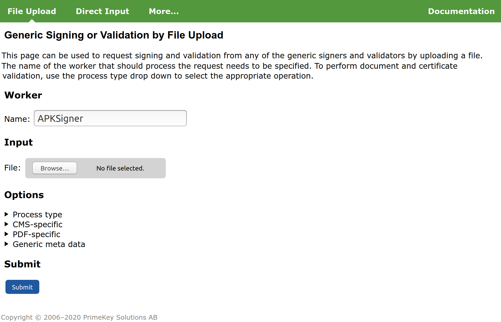

Setting up Android Signing
enterprise
The APK Signer signs Android applications in the Android Package Kit (APK) format and supports the following Android application signing schemes:
- v1 scheme: based on JAR signing
- v2 scheme: APK Signature Scheme v2 introduced in Android 7.0.
- v3 scheme: APK Signature Scheme v3 introduced in Android 9.
The APK Signature Scheme v3 introduces signature lineage to support APK key rotation. Key rotation allows changing the signing certificate when a newer version of an Android app is released. Thus, if the initial version of an android app was signed with a given key, it is now possible to switch to a different key if you need to. Reasons for changing the key could be organizational restructuring or reorganization of your key stores, for example.
The certificate lineage is provided in a lineage file, created and optionally updated using the additional signers APK Rotate Signer and APK Lineage Signer.
Note that SignServer's new APK Signer is recommended instead of using the previously JArchive Signer, supporting only version 1 signatures.
The following sections describe how to set up the APK Signer. For information on optionally using the additional signers APK Rotate Signer and APK Lineage Signer to utilize key rollover, see Setting up Android Signing#Rolling Over to a New Key.
For Client-Side Hashing, follow the instructions below but use the APK Hash Signer (in Step 1) and send requests using SignClient with the -clientside flag (in Step 3).
Prerequisite: Configured Crypto Worker
As with all signers, a crypto worker, for instance using a software keystore or PKCS#11, should be available before setting up the APK signers.
APK signing allows rollover from a previous key to a new one. In the case that the old key is in a software keystore file and the new key is in an HSM, use one crypto token/worker for the software keystore and another one for the HSM.
If you do not already have a crypto worker configured, follow the steps below to set one up using a software keystore for testing.
Add Crypto Worker
Do the following to set up a crypto worker using the sample keystore:
Select the AdminWeb Workers tab, and click Add.

Click From Template, select keystore-crypto.properties in the list, and click Next.
In the configuration text view, change the value for WORKERGENID1.KEYSTOREPATH so that the path corresponds to your SignServer installation, for example: WORKERGENID1.KEYSTOREPATH=/home/username/signserver/res/test/dss10/dss10_keystore.p12.
Click Apply.
Remember the name of the crypto worker (for example, CryptoTokenP12) as you will need it in the next steps when setting up the APK signers.
Step 1: Add APK Signer
Follow the steps below to add the APK Signer using the sample configuration file apk_signer.properties as a template.
- Select the SignServer AdminWeb Workers tab, and click Add to add a new worker.
- Choose the method From Template.
- Select apk_signer.properties in the Load from Template list and click Next.
- Change the sample configuration properties as needed, for example:
- Update the NAME property.
- Update the CRYPTOTOKEN property to the name of your crypto worker, in the previous instructions Add Crypto Worker named CryptoTokenP12.
- Update the AUTHTYPE so that the worker cannot be accessed without authentication (if using a live system).
- Update DEFAULTKEY to an existing key (or do this in a later step).
- Click Apply to load the configuration and list the worker in the All Workers list.
- Select the added worker in the list to open the Worker page.
- Check if the Worker status is Offline and if there are any errors listed. The "No key with alias" message means that the DEFAULTKEY property does not point to an existing key in the crypto token. This will be addressed in the next step Step 2: Choose Key and Certificate.
For a list of all APK Signer specific properties, see APK Signer.
Step 2: Choose Key and Certificate
You can skip this step if the Worker status is Active and the worker is set to use the desired existing key and certificate. Pay attention to the recommendations on the certificate validity to ensure that the certificate does not expire earlier than expected. Next, continue to Step 3: Test Signing.
If the Worker status is Offline, you need to generate a new key to use with the signer. Follow the steps below to generate a new key-pair and install the certificate:
- As the certificates for Android are typically self-signed, it is not necessary to request a certificate from a CA. However, you might want to specify the names and validity times to include in your certificate, so before generating the key, set the following worker properties (see General properties):
- SELFSIGNED_DN: Set this to the name that you would like to have in the certificate. Typically, the following format is used: "CN=My Application Name, O=My Company Name, C=US".
- SELFSIGNED_VALIDITY: Set this if you want a different validity time than the default (approximately 30 years).
- SELFSIGNED_SIGNATUREALGORITHM: Set this if you want the certificate to use a different algorithm than the default SHA1withRSA, for instance SHA256withRSA.
- Once the properties are set, click Renew key to generate a new key-pair.
- Specify a name for the new key and click Generate.
- Set the DEFAULTKEY property to the name of the new key you just generated.
The Worker is now listed with the status Active. Confirm that the certificate has the expected name and validity time etc.
Step 3: Test Signing
The following example shows how to sign using the SignServer Public Web. You can test signing using any of the SignServer client interfaces.
- Click Client Web.
 - Under File Upload, specify the Worker name used, for example, APKSigner.
- Select the file to sign, for example
myapplication-unsigned.apk. - Click Submit and store the resulting signed file, for example,
myapplication-signed.apk.
Step 4: Verify Signed APK
To test the signed file you can for instance use the official apksigner tool from Android SDK Build Tools.
 Version 0.9 or later of the apksigner tool is required as previous versions had issues if the APK contained a v3 signature.
Version 0.9 or later of the apksigner tool is required as previous versions had issues if the APK contained a v3 signature.
Verify Signed APK using apkgsigner
Run the following to verify the APK signature:
$ apksigner verify -v myapplication-signed.apkThe apksigner tool lists whether the signatures were verified correctly or not and indicates the versions of the signature scheme.
Signing with Multiple Signers
Usually, you sign an APK using only one signer. If you need to sign an APK using multiple signers, the v1 and v2 signature schemes allows signing with multiple signers.
To sign an APK using multiple signers:
- Make sure you have signers set up with the key and certificate for each signer to use.
- Configure your APK Signer according to the following:
- Update the worker property OTHER_SIGNERS to contain a comma-separated list with the additional signers to sign with.
- Set V3_SIGNATURE=FALSE to disable V3 signature scheme as it does not support multiple signers.
Requests to sign with the APK Signer will now add signatures also from the other signers specified in the configuration.
Rolling Over to a New Key
Android Signature Scheme V3 supports signing with a new key by rolling over to the new key using a lineage file. In SignServer, the special worker APK Rotate Signer is used to create a lineage file that rolls over from an old signer to a new one. Both signers must be configured in SignServer and have access to their respective key/certificate. The additional worker APK Lineage Signer can be used to inspect an optionally modify the content of a lineage file.
Setting up Workers for Key Rotation
Follow the example below to set up workers for key rotation:
- Make sure there is a worker available pointing to the old signer key. This could be the existing worker since before or a new worker that you set up with access to the old signer key. In this example, the old signer key is referred to as OldApkSigner.
- Set up a new worker pointing to the new key/certificate and name it NewApkSigner. For instructions on setting it up, see Step 1: Add APK Signer.
- Add the APK Rotate Signer, name it OldToNewApkRotateSigner and specify the following:
- Specify the two signers to include in the lineage by setting OTHER_SIGNERS=OldApkSigner, NewApkSigner.
- Optionally configure any of the properties OLD_SET_* or NEW_SET_* to specify specific capabilities for the respective signers in the lineage (see APK Rotate Signer - Available Properties).
- Setup the APK Lineage Signer to allow inspecting the lineage file and optionally update it.
 Make sure to set the appropriate authentication (AUTHTYPE) of each worker in order to prevent unauthorized usage of the signers. For more information, see Authorization Type.
Make sure to set the appropriate authentication (AUTHTYPE) of each worker in order to prevent unauthorized usage of the signers. For more information, see Authorization Type.
Rolling Over from Old to New Signer
- Confirm that the APK Rotate Signer OldToNewApkRotateSigner is correctly configured according to the Setting up Workers for Key Rotation instructions above:
- Specify the two signers to include in the lineage (old and new signer) by setting OTHER_SIGNERS=OldApkSigner, NewApkSigner.
- Optionally configure any of the properties OLD_SET_* or NEW_SET_* to specify specific capabilities for the respective signers in the lineage (see APK Rotate Signer - Available Properties).
Create the linear file in one of the following ways:
If you do not have an existing lineage file, create a new lineage file by sending an empty request to the signer:
Example creating a new lineagebin/signclient signdocument -workername OldToNewApkRotateSigner -data""-outfile old-to-new-lineage1.binTo continue on a previous lineage, either send in the lineage or a previous APK containing a signature with the lineage file:
Example using an existing lineagebin/signclient signdocument -workername OldToNewApkRotateSigner -infile old-to-new-lineage0.bin -outfile old-to-new-lineage1.bin
Inspect the produced lineage file using the APK Lineage Signer:
bin/signclient signdocument -workername ApkLineageSigner -metadata PRINT_CERTS=true-infile old-to-new-lineage1.binBase64 encode the lineage file and copy the value:
base64 old-to-new-lineage1.bin- Next, edit the NewApkSigner (pointing to the new key/certificate) according to the following:
- Set the base64 encoded lineage file content in the LINEAGE_FILE_CONTENT worker property (see APK Signer - Available Properties).
- Specify OldApkSigner for the OTHER_SIGNERS worker property: OTHER_SIGNERS=OldApkSigner (see APK Signer - Available Properties).
- Set the base64 encoded lineage file content in the LINEAGE_FILE_CONTENT worker property (see APK Signer - Available Properties).
The NewApkSigner can now be used instead of the old one for signing the application.
Modifying an Existing Lineage
The APK Lineage Signer allows you to print the content of a lineage file and modify it, that is, changing the capabilities of one of the signers. This requires that the lineage signer points to the signer you want to modify in the lineage file (by setting the OTHER_SIGNERS property in the APK Lineage Signer). The lineage file is then sent in together with the updated capability options and returns an updated lineage file.
- Make sure there is a worker available pointing to the signer for which you want to modify in the lineage file.
- Setup the APK Lineage Signer according to the following:
- Make sure to set the appropriate AUTHTYPE to protect this signer from unauthorized access in a production environment. For more information, see Authorization Type.
- Set its OTHER_SIGNERS worker property to the name of the signer you want to modify in the lineage.
- Update the worker properties with any new values for the capabilities, for example SET_INSTALLED_DATA and SET_PERMISSION, see APK Lineage Signer - Available Properties).
Send in the previous lineage file:
bin/signclient signdocument -workername ApkLineageSigner -infile a-previous-lineage.bin -outfilenew-lineage.binInspect the new lineage file:
bin/signclient signdocument -workername ApkLineageSigner -infilenew-lineage.binCopy the base64 encoded value of the
new-lineage.bin:base64new-lineage.binSet the base64 encoded lineage file content in the LINEAGE_FILE_CONTENT worker property of the APK Signer you want to use the updated file in (see APK Signer - Available Properties).